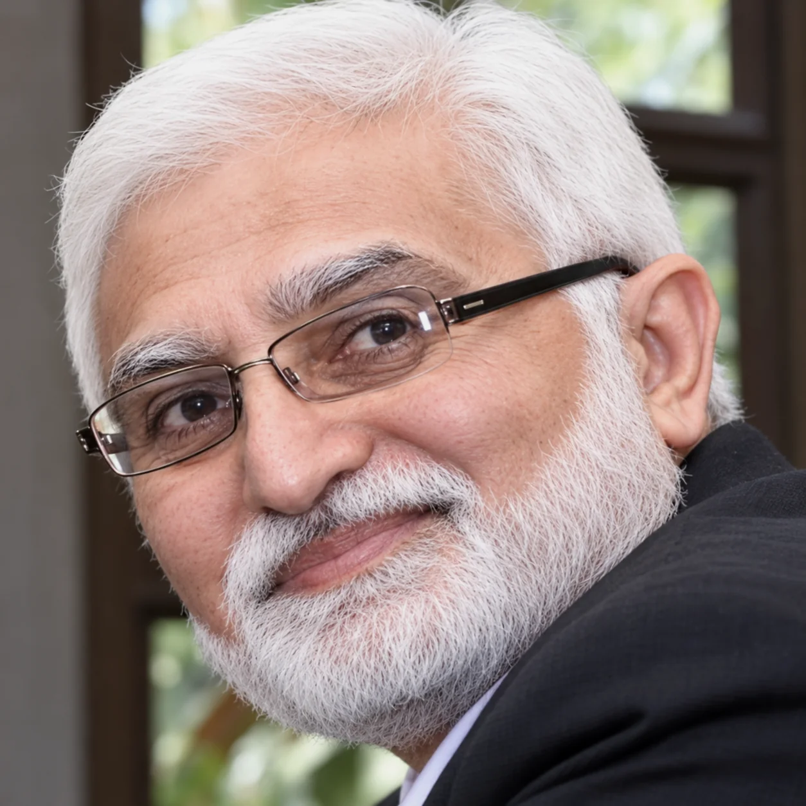
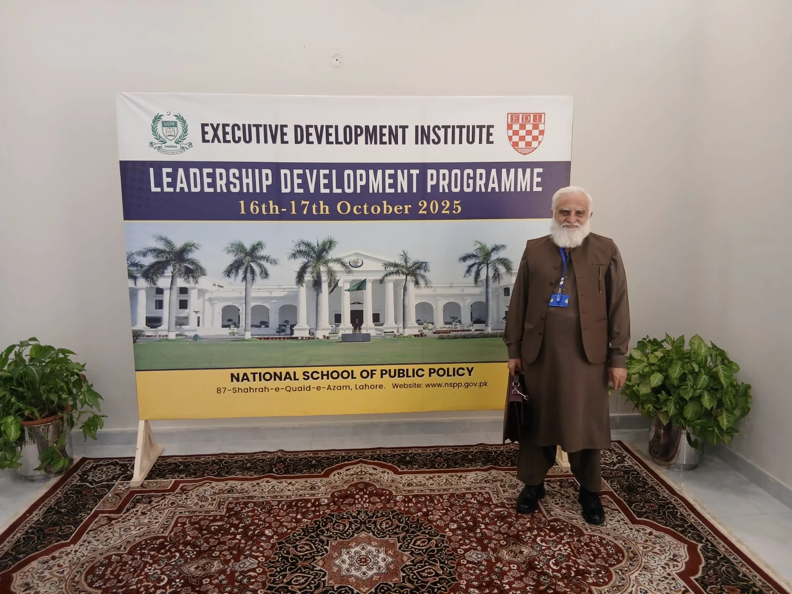
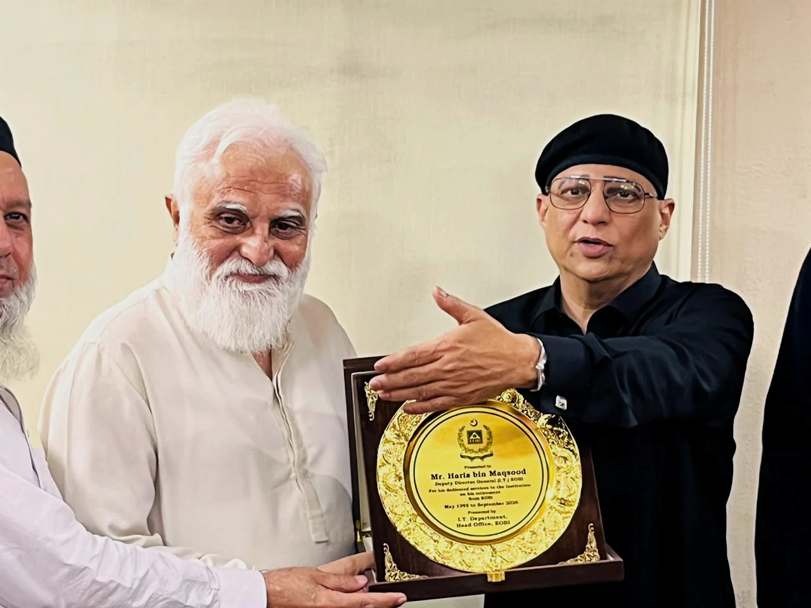
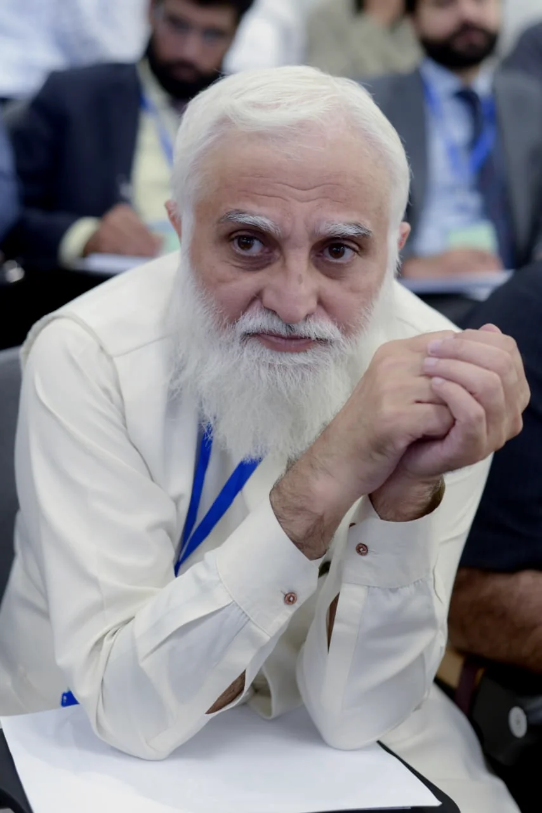
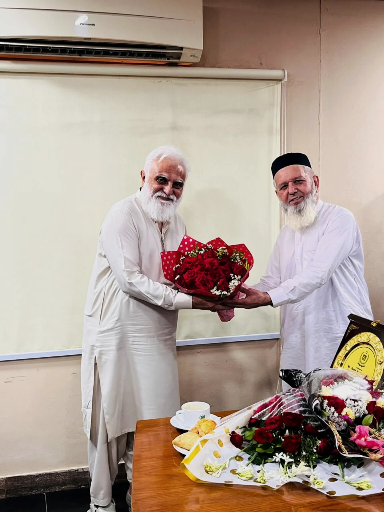
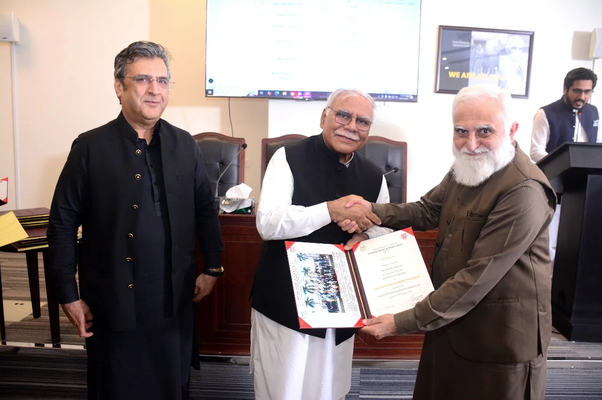
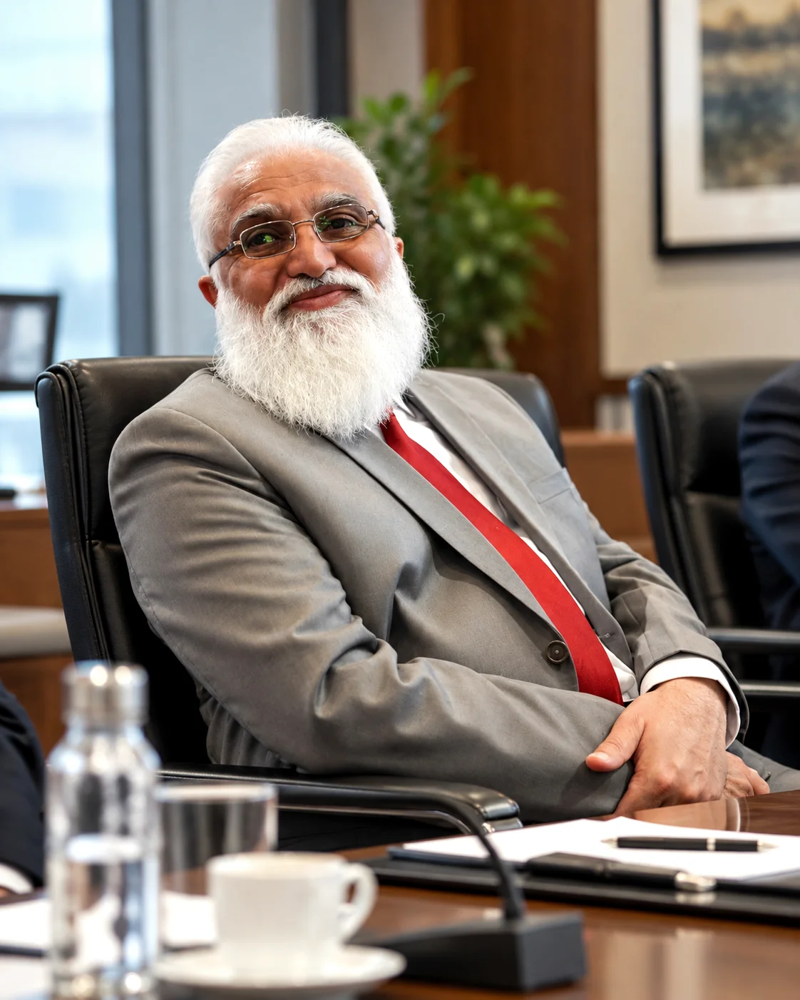
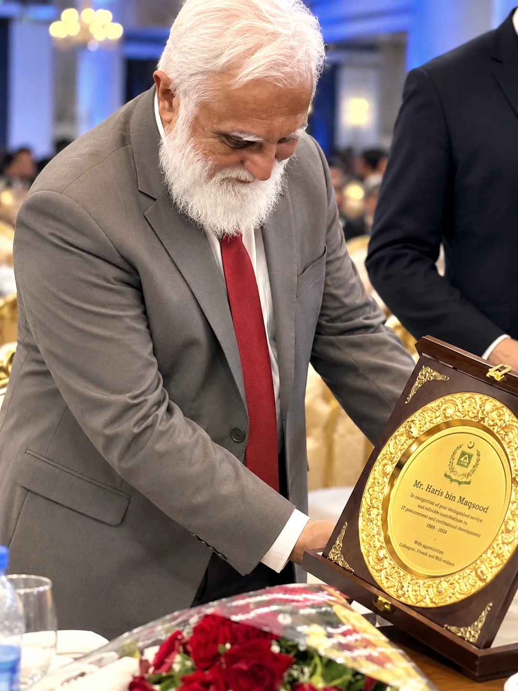

01↗
Government Tender & Bid Advisory
Interpreting tender requirements, eligibility conditions, technical specifications and documentation obligations to support complete, compliant submissions.
Strategic guidance for organisations navigating complex public-sector procurement, information systems and institutional transformation.

Haris Bin Maqsood is a former senior public-sector executive who served at Pakistan’s Employees’ Old-Age Benefits Institution (EOBI) from 1995 until his retirement in September 2026, concluding his service as Deputy Director General (BS-20) and Head of Information Technology.
His career brings together nationwide institutional IT leadership, government technology procurement, operational oversight and information management. His procurement responsibilities encompassed the end-to-end process on the government side, including requirements, evaluations, approvals and awards.
With an MSc in Statistics, an MBA and more than two decades of university teaching, he combines practical executive judgment with analytical and academic foundations.
Read his professional journey ↗Specialist insight for businesses seeking to navigate government procurement and institutions strengthening critical operations.
Interpreting tender requirements, eligibility conditions, technical specifications and documentation obligations to support complete, compliant submissions.
Advisory on IT, software, hardware and infrastructure procurement, informed by firsthand public-sector evaluation and procurement management.
Strengthening management information systems, reporting flows, data quality practices and information oversight for complex organisations.
Practical guidance for modernising administrative workflows, improving service continuity and coordinating enterprise technology change.
Independent advice grounded in the formal process, not promises of preferential access or guaranteed contract awards.
Review the organisation, opportunity, procurement documentation and applicable requirements.
Identify eligibility gaps, documentation needs, risks and readiness for the formal process.
Coordinate supporting material, compliance checklists and structured submission review.
Support compliant communication, internal decisions and process improvements.
A career spanning institutional administration, information technology, statistics and research.
Progressed from Assistant Director through senior management roles to Deputy Director General (BS-20), ultimately heading the nationwide IT function.
Taught statistics, statistical inference, business mathematics, marketing research and management-related subjects.
Assistant Manager, Data Processing; coordinated research-data processing and questionnaire coding workflows.
University of Karachi; Shaheed Zulfikar Ali Bhutto Institute of Science and Technology (SZABIST).
Led a transition from manual contribution vouchers to system-generated processing, supporting stronger consistency and controls.
Led API-based reporting improvements to support faster visibility into institutional contribution collection.
Oversaw the development of 24/7 operations to strengthen continuity of institutional IT services.
The work behind institutional leadership is measured in decisions, teams and long-standing professional relationships. Selected moments from that journey.

Learning, dialogue and professional engagement beyond the executive office.

Experience is most valuable when it brings clarity to complex decisions.
THE HBM ADVISORY APPROACH


Additional approved portraits and professional imagery.


Available for selected procurement advisory engagements, technology governance consulting and senior leadership opportunities.